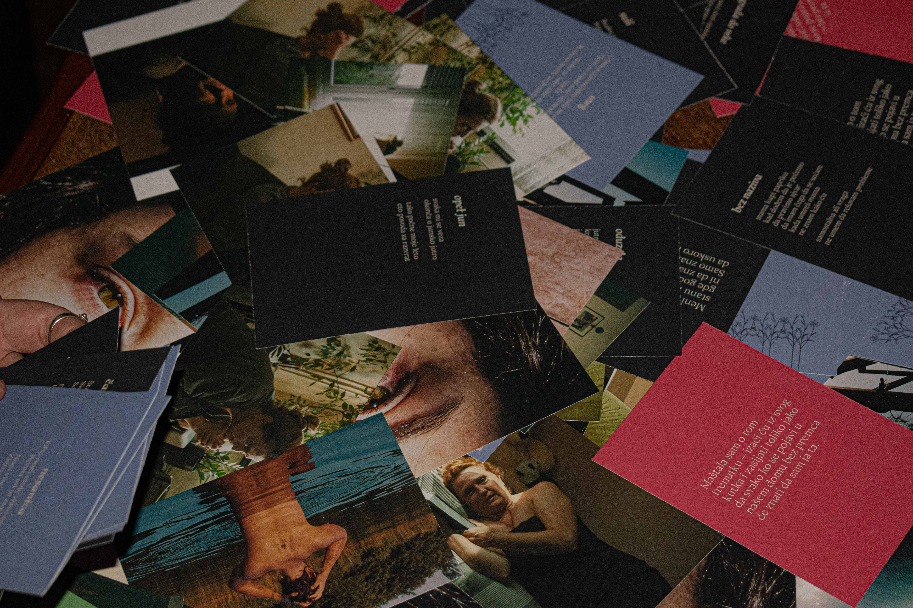
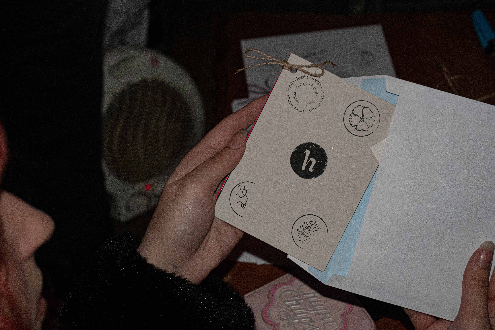
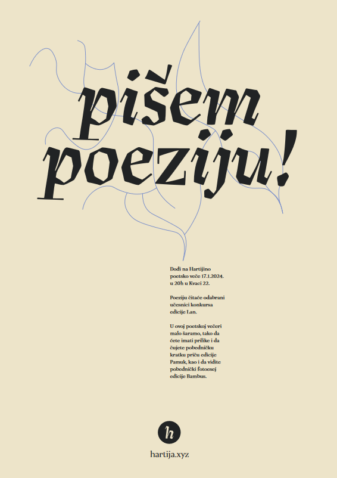

Izdavačka kuća Hartija nastala je u okviru jednosemestralnog predmeta Vizuelni identitet na Fakultetu za medije i komunikacije. Pored mene deo tima Hartije
su Niks Božović i Miloš Mijanović. Zajedno smo radili na izgradnji vizuelnog identiteta brenda izdavačke kuće koju smo osmislili, a
neki od mojih zasebnih zaduženja bili su održavanje instagram profila (pogledati ovde ),
prelom foto knjige ,,Dani u životu moje mame" Teodore Nedeljković i dizajn i prelom printova koje smo prodavali na poetskoj večeri.
hartija.xyz


